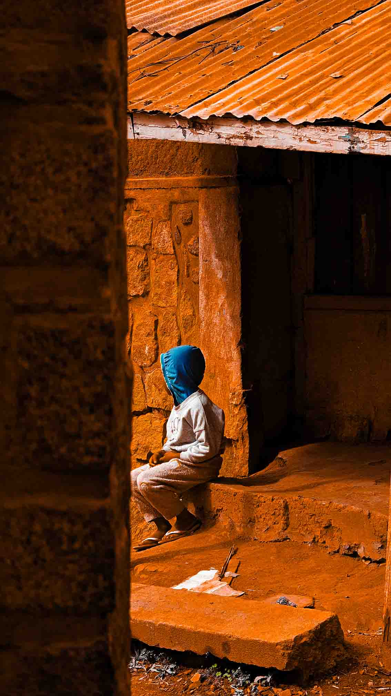
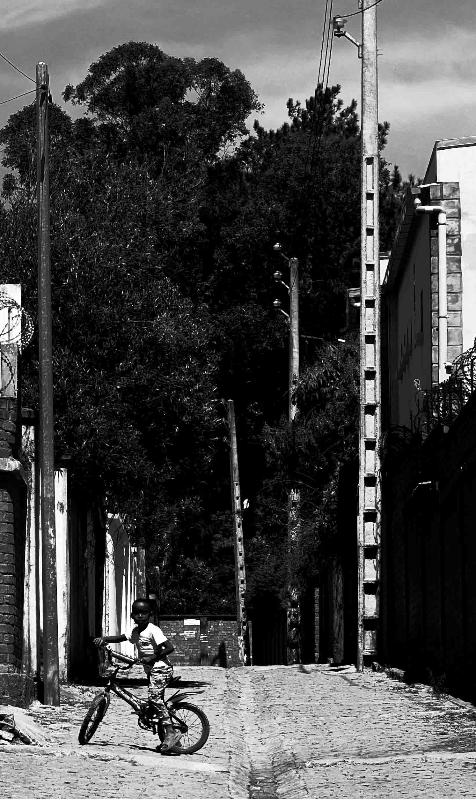
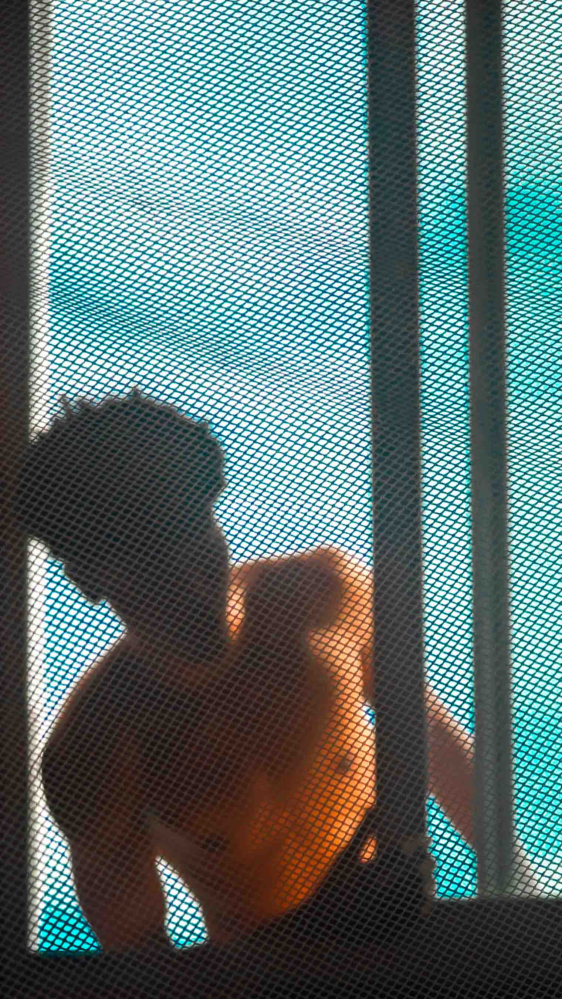
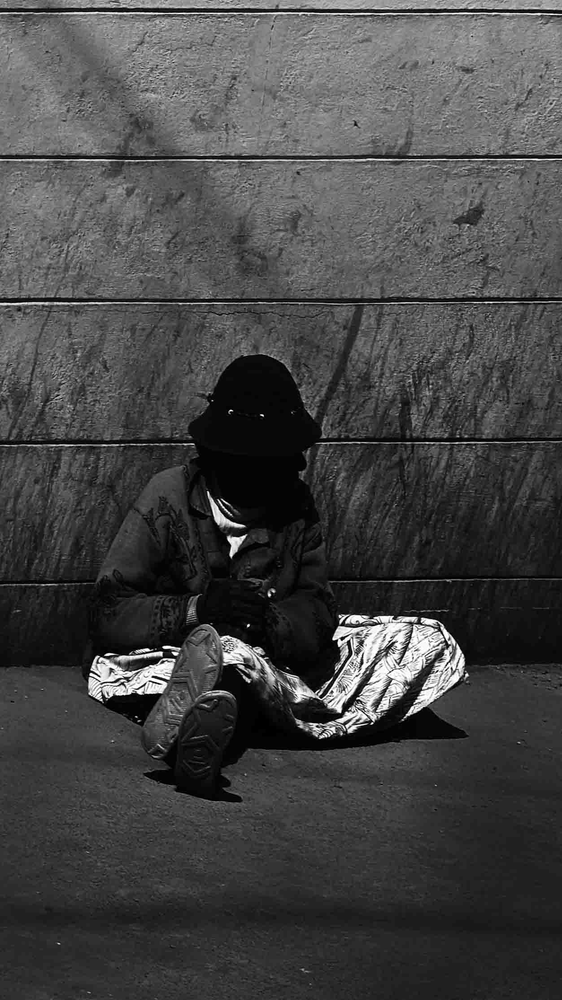

SALUTATIONS, HELLO, SALAMA, HALLO, HOLA, CIAO, NAMASTE, KONNICHIWA, MERHABA, SALAM, ZDRAVSTVUYTE, SHALOM, SAWUBONA, ANYONGHASEYO, JUMBO, HALLO, HEJ, AHOJ, SVEIKI.
Félicien ANJARASOA, actuellement étudiant en troisième année en Informatique. Autodidacte en Graphic Design et Multimédia, je suis passionné par la photographie et l'art en général.
est mon portfolio en art de la photographie. Vous y trouverez une sélection de mes travaux, des explications et mes inspirations ainsi que les mis à jour le plut récents possibles.
c'est de montrer mon sens artistique et ma créativité pour devenir un jour un Directeur Artistique pour des projets digitaux aux objectifs artistiques et innovants.



